🚰 工事別
衛生配管
給水・給湯・排水・通気配管の管材、接合、勾配、支持、地中配管、試験、保温。
早見表
主要な数値・ルールの要約です。根拠欄の「2-2.4.6(2)」は「第2編 2.4.6 (2)」を表します。
| 項目 | 規定 | 根拠 |
|---|---|---|
| 排水横管の勾配 | 呼び径65以下:1/50 ／ 75・100:1/100 ／ 125:1/150 ／ 150以上:1/200（いずれも最小） | 2-2.6.1(2) |
| 通気管の勾配 | 全ての立て管に向って上り勾配。逆勾配・凸凹なし | 2-2.6.1(2) |
| 排水の合流 | 排水横枝管等は45°以内の鋭角で水平に近く合流（ドレン管除く） | 2-2.4.8(1) |
| 通気の取出し | 排水横枝管等より垂直ないし45°以内。水平取出し不可 | 2-2.4.8(9) |
| 通気の連結高さ | その階の器具のあふれ縁より150mm以上で通気立て管に連結 | 2-2.4.8(10) |
| 満水試験継手 | 3階以上にわたる排水立て管には各階ごとに取付け | 2-2.4.8(5) |
| 分岐 | クロス継手不可、T継手を使用（通気・SPを除く） | 2-2.4.1(4) |
| 飲料水管の消毒 | 末端で遊離残留塩素 0.2mg/L 以上検出まで | 2-2.4.1(11) |
| 給水・給湯の水圧試験 | 保持60分以上（最下部の圧力）。給水装置:1.75MPa以上／ポンプ系:全揚程相当の2倍かつ0.75MPa以上／高置タンク以降:静水頭の2倍かつ0.75MPa以上 | 2-2.9.3(1) |
| 排水の試験 | 満水試験（保持30分以上）＋器具取付け後に通水試験 | 2-2.9.4(1) |
| 吊り間隔（横走り） | 鋼管・SUS管：呼び径100以下 2.0m以下、125以上 3.0m以下 ／ 塩ビ管・耐火二層管・PE管・銅管：80以下 1.0m以下、100以上 2.0m以下 | 2-2.6.2.2 表2.2.20 |
| 形鋼振れ止め（横走り） | 鋼管・SUS管：50〜100 8.0m以下、125以上 12m以下 ／ 塩ビ管等・銅管：25〜40 6.0m以下、50〜100 8.0m以下、125以上 12m以下。不要：鋼管・SUS管の呼び径40以下、塩ビ管等・銅管の呼び径20以下、吊りボルト長さ均一で200mm以下 | 2-2.6.2.2 表2.2.20, (2) |
| 立て管 | 形鋼振れ止め 各階1箇所。鋼管・SUS管の固定(床)は最下階又は最上階（呼び径80以下は不要としてよい） | 2-2.6.2.3 表2.2.21 |
| 埋設深さ | 車両道路 600mm以上、それ以外 300mm以上（寒冷地は凍結深度以上） | 2-2.7.2 |
| 給水管と排水管 | 平行埋設は水平実間隔500mm以上、給水管を上方に | 2-2.7.1(1) |
| 埋設表示 | 土被り150mm程度に埋設表示テープ（排水管を除く） | 2-2.7.1(9) |
| 塩ビ管の接着 | 面取り 呼び径13〜30:1mm、40・50:2mm、65以上:2mm以上。差込み保持 50以下30秒以上、65以上60秒以上 | 2-2.5.9(1)(ｱ) |
| 保温の厚さ（保温Ⅶ 給水・排水） | ア・イ：呼び径15〜80:20mm ／ 100〜150:25mm ／ 200〜300:40mm | 2-3.1.6 表2.3.7 |
| 保温の厚さ（保温Ⅰ 給湯） | ア・イ：呼び径15〜80:20mm ／ 100〜150:25mm ／ 200〜300:40mm | 2-3.1.6 表2.3.7 |
標準仕様書 条文
第2編 共通工事
2.1.2.5給水、給湯及び消火用第2編


(1) 給水、給湯及び消火管の規格は、表 2.2.6 によるものとし、管材は特記による。
表2.2.6 給水、給湯及び消火管
規 格
呼 称 用 途
番 号 名 称 備 考
鋼 管 JIS G 3452 配管用炭素鋼鋼管 白 管 消火
JIS G 3454 圧力配管用炭素鋼鋼管 STPG370 消火
白管 Sch40
白管 Sch80
塩ビライニング JWWA K 116 水道用硬質塩化ビニルライニング鋼 SGP-VA 給水
鋼管 管 （一般配管用）
SGP-VB
（一般配管用）
SGP-VD
（地中配管用）
WSP 011 フランジ付硬質塩化ビニルライニン SGP-FVA
グ鋼管 （一般配管用）
SGP-FVB
（一般配管用）
SGP-FVD
（地中配管用）
耐熱性ライニン JWWA K 140 水道用耐熱性硬質塩化ビニルライニ SGP-HVA 給湯
グ鋼管 ング鋼管
ポリ粉体鋼管 JWWA K 132 水道用ポリエチレン粉体ライニング SGP-PA 給水
鋼管 （一般配管用）
SGP-PB
（一般配管用）
SGP-PD
（地中配管用）
WSP 039 フランジ付ポリエチレン粉体ライニ SGP-FPA
ング鋼管 （一般配管用）
SGP-FPB
（一般配管用）
SGP-FPD
（地中配管用）
外面被覆鋼管 WSP 041 消火用硬質塩化ビニル外面被覆鋼管 SGP-VS 消火
（地中配管用）
STPG 370 VS
白管 Sch 40
（地中配管用）
ナイロンコーテ WSP 067 ナイロンコーティング鋼管 SGP-FNP 給水
ィング鋼管 SGP-RNP
ステンレス JIS G 3448 一般配管用ステンレス鋼鋼管 給水、給湯
鋼管 JIS G 3459 配管用ステンレス鋼鋼管 、消火
JWWA G 115 水道用ステンレス鋼鋼管 給水、給湯
JWWA G 119 水道用波状ステンレス鋼管 給水
銅 管 JIS H 3300 銅及び銅合金の継目無管 硬質（Ｍ） 給水、給湯
被覆銅管 JIS H 3330 外面被覆銅管 給水、給湯
JWWA H 101 水道用銅管
保温付被覆 JCDA 0008 保温付被覆銅管 硬質又は軟質 給水、給湯
銅管
塩ビ管 JIS K 6742 水道用硬質ポリ塩化ビニル管 VP又はHIVP 給水
JWWA K 129 水道用ゴム輪形硬質ポリ塩化ビニル HIVP
管 (Ⅰ形又はⅡ形)
VP
(Ⅰ形又はⅡ形)
ポリエチレン管 JIS K 6762 水道用ポリエチレン二層管 給水
JWWA K 144 水道配水用ポリエチレン管
架橋ポリエチレ JIS K 6769 架橋ポリエチレン管 給水、給湯
ン管
JIS K 6787 水道用架橋ポリエチレン管 給水
ポリブテン管 JIS K 6778 ポリブテン管 給水、給湯
注 1. 規格にない塩ビライニング鋼管、ポリ粉体鋼管及び塩ビ管の材料、製造方法、品質等は、JWWA K 116、JWWA K 129及びJWWA K 132に準ずるものとする。
2. 被覆銅管は、呼び径20までの銅管に替えて使用してもよい。 3. 保温付被覆銅管は、給湯用の銅管で壁又は床埋設する場合に、銅管に替えて使用してもよい。 4. ポリエチレン管は、屋外埋設用とする。 5. 消火用配管は、消防法令に適合するものとする。 6. ナイロンコーティング鋼管の使用温度は60℃以下とする。
(2) 給水、給湯及び消火管の継手は、表 2.2.7 によるほか、次による。
(ｱ) 塩ビライニング鋼管、耐熱性ライニング鋼管及びポリ粉体鋼管で、ねじ接合をする場合の継手は管端防食管継手とし、パイプニップルは管端防食管継手用パイプニップル（給湯管は除く。）とする。
(ｲ) ステンレス鋼管のメカニカル形管継手の種類は特記による。
表2.2.7 給水、給湯及び消火管の継手
規 格
呼 称 備 考
番 号 名 称
鋼管及び外面被 JIS B 2301 ねじ込み式可鍛鋳鉄製管継手 亜鉛めっきを施したもので地中配管
覆鋼管継手 用は外面に樹脂被覆を施したもの
JIS B 2302 ねじ込み式鋼管製管継手 亜鉛めっきを施したもの
JPF MP 004 圧力配管用ねじ込み式可鍛鋳鉄製管 亜鉛めっきを施したもので地中配管
継手 用は外面に樹脂被覆を施したもの
JIS B 2220 鋼製管フランジ 亜鉛めっきを施したもの
JIS B 2239 鋳鉄製管フランジ 亜鉛めっきを施したもの
JIS B 2311 一般配管用鋼製突合せ溶接式管継手 亜鉛めっきを施したもの
JIS B 2312 配管用鋼製突合せ溶接式管継手 亜鉛めっきを施したもの
JIS B 2313 配管用鋼板製突合せ溶接式管継手
JIS B 2316 配管用鋼製差込み溶接式管継手
JPF MP 006 ハウジング形管継手 消火用
塩ビライニング JPF MP 003 水道用ライニング鋼管用ねじ込み式
鋼管及びポリ粉 管端防食管継手
体鋼管継手 JPF NP 001 管端防食管継手用パイプニップル
WSP 011 フランジ付硬質塩化ビニルライニン エルボ、チーズ、レジューサー
グ鋼管
WSP 039 フランジ付ポリエチレン粉体ライニ
ング鋼管
JPF MP 008 水道用ライニング鋼管用ねじ込み式
管端防食管フランジ
JWWA K 150 水道用ライニング鋼管用管端防食形
継手
耐熱性ライニン JWWA K 150 水道用ライニング鋼管用管端防食形
グ鋼管継手 継手
JPF MP 005 耐熱性硬質塩化ビニルライニング鋼
管用ねじ込み式管端防食管継手
JPF MP 011 耐熱性硬質塩化ビニルライニング鋼
管用ねじ込み式管端防食管フランジ
ナイロンコーテ WSP 067 ナイロンコーティング鋼管 給水用
ィング鋼管継手 JPF MP 013 ナイロンコーティング鋼管用ハウジ
ング形管継手
ステンレス鋼管 JIS B 2220 鋼製管フランジ 遊合形の場合は、亜鉛めっきを施し
継手 たもの
JIS B 2308 ステンレス鋼製ねじ込み式管継手 計器類の取り出し管
JIS B 2309 一般配管用ステンレス鋼製突合せ溶
接式管継手
JIS B 2312 配管用鋼製突合せ溶接式管継手
JIS B 2313 配管用鋼板製突合せ溶接式管継手
SAS 322 一般配管用ステンレス鋼鋼管の管継
手性能基準
SAS 363 管端つば出しステンレス鋼管継手
SAS 361 ハウジング形管継手 給水用に使用してもよい
JPF SP 001 配管用ステンレス鋼製スタブエンド
JWWA G 116 水道用ステンレス鋼鋼管継手
銅管及び保温付 JCDA 0002 銅配管用銅及び銅合金の機械的管継
被覆銅管継手 手の性能基準
JIS H 3401 銅及び銅合金の管継手
JCDA 0001 銅及び銅合金の管継手
JWWA H 102 水道用銅管継手
塩ビ管継手 JIS K 6743 水道用硬質ポリ塩化ビニル管継手 TSA形又はB形、HITSA形又はB形
JWWA K 130 水道用ゴム輪形硬質ポリ塩化ビニル HIVP (Ⅰ形又はⅡ形)
管継手 VP (Ⅰ形又はⅡ形)
JWWA K 131 水道用硬質塩化ビニル管のダクタイ チーズ
ル鋳鉄異形管
ポリエチレン管 JWWA B 116 水道用ポリエチレン管金属継手
継手 JWWA K 145 水道配水用ポリエチレン管継手
架橋ポリエチレ JIS K 6770 架橋ポリエチレン管継手
ン管継手 JIS K 6788 水道用架橋ポリエチレン管継手
ポリブテン管継 JIS K 6779 ポリブテン管継手
手
注 1. 規格にない鋼製溶接式管継手及び塩ビ管継手の材料、製造方法、品質等は、JIS及びJWWAに準ずるものとする。
2. 鋼管及び外面被覆鋼管継手のJIS B 2312及びJIS B 2313は、JPF SP 011「鋼製突合せ溶接式亜鉛めっ
き管継手」による亜鉛めっきを施したものとする。また、鋼管及び外面被覆鋼管継手のJIS B 2316は、J
IS H 8610「電気亜鉛めっき」による２級以上の亜鉛めっきを施したものとする。
3. JIS B 2220及びJIS B 2239の呼び圧力10Ｋフランジは、薄形フランジを除く。
4. 消火用配管の継手は、消防法令に適合するものとする。
5. 規格にない水道用ライニング鋼管用ねじ込み式管端防食管継手は、(公社)日本水道協会の認証登録品
とする。
6. ナイロンコーティング鋼管用ハウジング形管継手は、40Ａ以上とする。※表の罫線はテキスト化で崩れます。数値は必ず原本ページ画像で確認してください。
2.1.2.6排水及び通気用第2編


(1) 排水及び通気管の規格は、表 2.2.8 によるものとし、管材は特記による。
表2.2.8 排水及び通気管
規 格
呼 称 用 途
番 号 名 称 備 考
鋼 管 JIS G 3442 水配管用亜鉛めっき鋼管 雑排水、通気
JIS G 3452 配管用炭素鋼鋼管 白管 ドレン
排水用塩ビライニ WSP 042 排水用硬質塩化ビニルライニング鋼管 汚水、雑排水
ング鋼管 雨水、通気
コーティング鋼管 WSP 032 排水用ノンタールエポキシ塗装鋼管 汚水、雑排水
雨水、通気
塩ビ管 JIS K 6741 硬質ポリ塩化ビニル管 VP・VU 汚水、雑排水
AS 58 排水用リサイクル硬質ポリ塩化ビニル管 REP-VU 雨水、通気
JIS K 9798 リサイクル硬質ポリ塩化ビニル発泡三層管 RF-VP ドレン
JIS K 9797 リサイクル硬質ポリ塩化ビニル三層管 RS-VU
耐火二層管 ― 排水・通気用耐火二層管 汚水、雑排水
JIS K 6741「硬質ポリ塩化ビニル管（VP） 雨水、通気
」又はJIS K 9798「リサイクル硬質ポリ塩 ドレン
化ビニル発泡三層管（RF-VP）」規格品に
繊維モルタルで被覆したもので国土交通大
臣認定のもの
コンクリート管 JIS A 5372 プレキャスト鉄筋コンクリート製品 外圧管１
（1類水路用遠心力鉄筋コンクリート管） 種のＢ形
注 塩ビ管のRF-VPは屋内用とし、VU、REP-VU及びRS-VUは、屋外埋設用とする。
(2) 排水及び通気管の継手は、表 2.2.9 による。
表2.2.9 排水及び通気管の継手
呼 称 規 格 備 考
番 号 名 称
鋼管継手 JPF DF 001 排水用ねじ込み式鋳鉄製管継手 亜鉛めっきを施したもの
JPF MDJ 002 排水鋼管用可とう継手 クッションパッキン付を含む。
（MDジョイント） 住宅内転がし配管用は除く。
JPF MDJ 003 圧送排水鋼管用可とう継手
排水用塩ビライ JPF MDJ 002 排水鋼管用可とう継手 クッションパッキン付を含む。
ニング鋼管継手 （MDジョイント） 住宅内転がし配管用は除く。
JPF MDJ 004 ちゅう房排水用可とう継手
コーティング鋼 JPF MDJ 002 排水鋼管用可とう継手 クッションパッキン付を含む。
管継手 （MDジョイント） 住宅内転がし配管用は除く。
JPF MDJ 003 圧送排水鋼管用可とう継手
JPF MDJ 004 ちゅう房排水用可とう継手
塩ビ管継手 JIS K 6739 排水用硬質ポリ塩化ビニル管継
手
AS 38 屋外排水設備用ポリ硬質塩化ビ
ニル管継手（VU継手）
耐火二層管継手 ― 排水・通気用耐火二層管継手
JIS K 6739「排水用硬質ポリ塩
化ビニル管継手」規格品に繊維
モルタルで被覆したもので国土
交通大臣認定のもの
注 1. 規格にない形状、寸法の排水用ねじ込み式鋳鉄製管継手の品質、管の許容差、試験等は、JPF DF 001「排水用ねじ込み式鋳鉄製管継手」に準ずるものとする。
2. 通気管及び呼び径25以下の排水管の継手には、JIS B 2301「ねじ込み式可鍛鋳鉄製管継手」及びJIS
B 2302「ねじ込み式鋼管製管継手」を使用してもよい。
3. 満水試験継手は、JPF MDJ 002「排水鋼管用可とう継手」の満水試験用掃除口付ソケットとする。
なお、継手形状が異なる場合は、上記の規格に準ずるものとする。
※表の罫線はテキスト化で崩れます。数値は必ず原本ページ画像で確認してください。
2.4.1一般事項第2編

(1) 配管の施工に先立ち、他の設備配管類及び機器との関連事項、維持管理性を詳細に検討し、勾配を考慮して、その位置を正確に決定する。
(2) 配管を建築物内に施工する場合には、工事の進捗に伴う吊り金物、支持金物等の取付け及びスリーブの埋込みを遅滞なく行う。
(3) 配管のスリーブに紙製等の仮枠を使用した部分は、配管施工前に必ず仮枠を取外し、配管施工後にモルタル、ロックウール等で充塡する。
なお、ロックウールを充塡する場合は、脱落防止の処置を施す。
(4) 分岐又は合流する場合は、クロス継手を使用せず、必ずＴ継手を使用するものとするが、１つのＴ継手で相対する２方向への分岐又は相対する２方向からの合流に用いてはならない。ただし、通気及びスプリンクラー消火配管を除く。
(5) 建築物導入部配管で不等沈下のおそれがある場合は、特記により、標準図（建築物導入部の変位吸収配管要領（一））のフレキシブルジョイントを使用した方法で施工する。ただし、排水及び通気配管を除く。
(6) 建築物エキスパンションジョイント部の配管要領は、標準図（建築物エキスパンションジョイント部配管要領）による。
(7) 伸縮管継手を設ける配管には、その伸縮の起点として有効な箇所に、標準図（伸縮管継手の固定及びガイド・座屈防止用形鋼振れ止め支持施工要領）による固定及びガイドを設ける。
(8) 給水、給湯、開放系の冷温水及び冷却水配管で、機器接続部の金属材料と配管材料のイオン化傾向が大きく異なる場合（鋼とステンレス、鋼と銅）は、絶縁継手を使用し絶縁を行うものとする。
なお、設置箇所及び絶縁継手の仕様は特記による。
(9) 塩ビライニング鋼管、耐熱性ライニング鋼管及びポリ粉体鋼管と給水栓、銅合金製配管附属品等との接続で、絶縁を要する場合の継手は、JPF MP 003「水道用ライニング鋼管用ねじ込み式管端防食管継手」及び JPF MP 005「耐熱性硬質塩化ビニルライニング鋼管用ねじ込み式管端防食管継手」に規定する器具接続用管端防食管継手を用いる。
(10) 配管に取付ける計器取付用短管（タッピング等）は、配管材料と同材質とする。
(11) 配管完了後、管内の洗浄を十分行う。
なお、飲料水管の場合は、末端部において遊離残留塩素が 0.2mg/L 以上検出されるまで消毒を行う。
(12) 揚水ポンプ、消火ポンプ、冷却水ポンプ及び冷温水ポンプに取付ける呼び径 50 以下の逆止弁には、呼び径 15 以上のバイパス管及び弁を取付ける。ただし、バイパス弁内蔵形は除く。
(13) 銅管（呼び径 32 以下）をはんだ付けしたときは、フラックスを除去するため、速やかに水による管内の洗浄を行う。
(14) 飲料水以外の給水管を設ける場合は、飲料水管との識別を行い誤接続がないこととする。
※表の罫線はテキスト化で崩れます。数値は必ず原本ページ画像で確認してください。
2.4.7給水配管第2編

(1) 給水管の主配管には、適切な箇所にフランジ継手を挿入し、取外しを容易にする。
なお、呼び径 25 以下の見え掛り配管には、ユニオンを使用してもよい。
(2) 水栓類は、ねじにテープシール材を適数回巻きしてから適正トルクでねじ込む。
(3) 配管中の空気だまりには、エア抜弁又は吸排気弁を設ける。
(4) 揚水ポンプ廻り配管要領は、標準図（揚水ポンプ（横形）廻り配管要領、揚水ポンプ（立形）廻り配管要領）による。
(5) タンク廻りの配管は、次による。
(ｱ) 各接続管の荷重が直接タンク本体にかからないように支持する。
(ｲ) 受水タンク及び高置タンクの排水及び通気管を除く各接続管には、鋼板製タンク及びステンレス鋼板製タンクにあってはベローズ形フレキシブルジョイントを、FRP 製タンクにあっては合成ゴム製フレキシブルジョイントを取付ける。
(ｳ) FRP 製タンクのオーバーフロー管は、JIS K 6741「硬質ポリ塩化ビニル管」又は JIS K9798「リサイクル硬質ポリ塩化ビニル発泡三層管」とする。
(ｴ) 配管要領は、標準図（機器廻り配管吊り及び支持要領（二）、受水タンク廻り配管要領）による。
※表の罫線はテキスト化で崩れます。数値は必ず原本ページ画像で確認してください。
2.4.8排水及び通気配管第2編

(1) ドレン管を除き、排水横枝管等が合流する場合は、必ず 45 ﾟ以内の鋭角をもって水平に近く合流させる。
(2) 次のものからの排水は、間接排水とする。
(ｱ) 食品冷蔵容器、厨房用機器、洗濯用機器（業務用）、医療用機器及び水飲器
(ｲ) 冷凍機及び冷却塔並びに冷媒又は熱媒として水を使用する装置
(ｳ) 空気調和用機器
(ｴ) 水用タンク、貯湯タンク、熱交換器その他これに類する機器
(ｵ) 給湯及び水用各種ポンプ装置その他同種機器
(3) 間接排水管は、水受器その他のあふれ縁よりその排水管径の２倍以上の空間（飲料用の貯水槽の場合は最小 150mm 以上）を保持して開口しなければならない。また、水が飛散し支障がある場合は、それに適応した防護方法を講ずる。
(4) 排水立て管の最下部は、必要に応じて、標準図（立て管の床固定要領）により、支持台を設け固定する。
(5) ３階以上にわたる排水立て管には、各階ごとに満水試験継手を取付ける。
(6) ユニット形空気調和機、コンパクト形空気調和機、パッケージ形空気調和機、マルチパッケージ形空気調和機及びガスエンジンヒートポンプ式空気調和機のドレン管には、送風機の全静圧以上の落差をとった空調機用トラップを設けるものとし、空調機用トラップの形式は特記による。
(7) 厨房排水及び厨房排水用通気の継手に排水鋼管用可とう継手を使用する場合は、JPF MDJ004「ちゅう房排水用可とう継手」を使用する。
(8) 水中ポンプの吐出管は、ポンプ本体に荷重がかからないように、かつ、地震動に対しても堅固に支持する。
なお、ポンプを引き上げられるように、吐出管はフランジ接合とし、かつ、逆流を防ぐような立上り部分を設ける。
(9) 通気管は、排水横枝管等より垂直ないし 45 ﾟ以内の角度で取出し、水平に取出してはならない。
(10) 各階の通気管を通気立て管に連結する場合は、その階の器具のあふれ縁より 150mm 以上の所で連結する。
なお、通気立て管を伸頂通気管に連結する場合もこれによる。
(11) 排水及び通気配管要領は、標準図（排水・通気配管の正しいとり方）による。
※表の罫線はテキスト化で崩れます。数値は必ず原本ページ画像で確認してください。
2.4.9給湯配管第2編
2.5.1一般事項第2編

(1) 管は、全て、その断面が変形しないよう管軸心に対して直角に切断し、その切り口は平滑に仕上げる。
(2) 塩ビライニング鋼管、耐熱性ライニング鋼管、ポリ粉体鋼管及び外面被覆鋼管は、帯のこ盤又はねじ切機搭載形自動丸のこ機等で切断し、パイプカッターによる切断は禁止する。また、切断後、適正な内面の面取りを施す。
(3) 地中配管用の塩ビライニング鋼管、ポリ粉体鋼管及び外面被覆鋼管のねじ加工及びねじ込み作業は、外面被覆材に適した専用工具を使用し、適正トルクで行う。チャック損傷部分は、プラスチックテープ 2 回巻きとする。
(4) ねじ加工機は、自動定寸装置付きとする。また、ねじ加工に際しては、ねじゲージを使用して、JIS B 0203「管用テーパねじ」に規定するねじが適正に加工されているか確認する。
(5) 塩ビライニング鋼管等の防食措置を施した配管と管端防食管継手との接続部は、切削ねじ接合とする。ただし、呼び径 50 以下のポリ粉体鋼管は、転造ねじ接合としてもよい。
(6) 接合する前に、切りくず、ごみ等を十分除去し、管の内部に異物のないことを確かめてから接合する。
(7) 配管の施工を一時休止する場合等は、その管内に異物が入らないように養生する。
(8) 配管加工を工事現場以外で行い、配管に曲がり等がある場合は、搬入及び保管時に、端部や接合部等に荷重が集中しないように養生する。
※表の罫線はテキスト化で崩れます。数値は必ず原本ページ画像で確認してください。
2.5.2鋼管第2編

2.5.2.1 一般事項
(1) 排水及び通気管を除く水配管の場合は、ねじ接合(呼び径 100 以下に限る。)、フランジ接合、ハウジング形管継手による接合又は溶接接合とする。
(2) 排水(ポンプアップ排水管を除く。)及び通気管の場合は、ねじ接合又は排水鋼管用可とう継手（MD ジョイント）とする。
なお、排水鋼管用可とう継手（MD ジョイント)による接合方法は、2.5.6「排水用塩ビライニング鋼管及びコーティング鋼管」による。
(3) ポンプアップ排水管の場合は、ねじ接合、フランジ接合、圧送排水鋼管用可とう継手による接合又はハウジング形管継手による接合とする。
(4) 蒸気給気管及び蒸気還管の場合は、フランジ接合又は溶接接合とする。ただし、呼び径50 以下の低圧（0.1MPa 未満）の蒸気給気管及び蒸気還管の場合は、ねじ接合としてもよい。
(5) 油管は、原則として、溶接接合とする。
(6) 高温水管は、原則として、溶接接合とする。
2.5.2.2 ねじ接合
(1) 接合用ねじは、JIS B 0203「管用テーパねじ」による管用テーパねじとし、接合にはねじ接合材を使用する。接合材は、一般用ペーストシール剤又は防食用ペーストシール剤とし、ねじ山、管内部及び端面に付着している切削油、水分、ほこり等を十分に除去した後、おねじ部のみ適量塗布してねじ込む。ただし、消火配管においては、あらかじめシール剤（管内の流体に溶出せず、使用目的に適する成分のもの）が塗布された工場加工の継手を使用する場合は、ねじ接合材の塗布を省略することができる。
なお、油配管のペーストシール剤は、耐油性のものとする。
(2) 排水用ねじ込み式鋳鉄製管継手との接合は、管のテーパおねじ部を管端面と継手のリセスとの間にわずかな隙間ができる程度に正確にねじを切り、緊密にねじ込む。
(3) 継手接続後のねじ部の鉄面は、さび止めペイント２回塗りを行う。
2.5.2.3 フランジ接合
(1) フランジと管との取付方法は、原則として、溶接とする。ただし、2.5.2.1「一般事項」で、ねじ接合が使用できる場合は、ねじ込みとしてもよい。
(2) 接合には、適正材質及び厚さのガスケットを介し、ボルト及びナットを均等に片寄りなく締付ける。
(3) 蒸気管の場合は、ガスケット面には植物性油に黒鉛を混ぜたものを薄く塗布する。
(4) 油管の場合のガスケットは、耐油性のものとする。
2.5.2.4 溶接接合
(1) 2.5.15「溶接接合」の当該事項による。
2.5.2.5 ハウジング形管継手による接合
(1) ハウジング形管継手は、JPF MP 006「ハウジング形管継手」に規定するグルーブ形又はリング形とし、配管の接合用加工部、管端シール面等は、耐塩水噴霧試験に適合する防錆塗料により、十分な防錆処理を行う。
2.5.2.6 管端つば出し鋼管継手による接合
(1) 管端つば出し鋼管継手は、WSP 071「管端つば出し鋼管継手 加工・接合基準」の規定により工場加工されたものとし、遊合形フランジ接合とする。
※表の罫線はテキスト化で崩れます。数値は必ず原本ページ画像で確認してください。
2.5.3塩ビライニング鋼管、耐熱性ライニング鋼管及びポリ粉体鋼管第2編

(1) 塩ビライニング鋼管、耐熱性ライニング鋼管及びポリ粉体鋼管は、ねじ接合(呼び径 100以下に限る。)又はフランジ接合とする。
(2) ねじ接合の場合は、次によるほか、2.5.2「鋼管」のねじ接合による。ただし、ねじ接合材は防食用ペーストシール剤とする。
(ｱ) 管の内面の面取りは、次によるものとし、継手形式ごとに適切に行う。
(a) 切削ねじの場合は、スクレーパー等の面取り工具を用いるものとする。
(b) 転造ねじの場合は、ねじ加工機に組込まれた専用リーマを用いて面取りを行い、バリをとる場合は、スクレーパー等を使用してもよい。
(ｲ) JIS B 0203「管用テーパねじ」に規定するねじが適正に切られていることを、ねじゲージにより確認後、ねじ込む。
なお、ねじ込みは、適正な締め付け力で継手製造者が規定する余ねじ山数又は余ねじ長さによりねじ込む。
(ｳ) ポリ粉体鋼管に転造ねじ接合を行う場合の管端防食管継手の保護は、次による。
(a) ねじ込み前に、転造ねじ部の管の内径は、継手製造者が規定する最小内径以上であることを確認する。
(b) 継手製造者の規定によりねじ込みを行い、締めすぎによる管端コアの破損に注意する。
(ｴ) 管端防食管継手の再使用は禁止する。
(3) 外面樹脂被覆を施した管端防食管継手の場合は、(2)による。ただし、継手の外面樹脂部と管の隙間及び管ねじ込み後の残りねじ部をブチルゴム系コーキングテープ又はゴムリングで完全に密封する。また、密封後コーキングテープ又はゴムリング露出部は、プラスチックテープ２回巻きとする。
なお、ゴムリングの場合は、管材との接続が終了した後でゴムリングの装着が容易に確認できるものとする。
(4) 塩ビライニング鋼管のフランジ接合の場合で、やむを得ずフランジを現場取付けする場合は、監督職員の承諾を受け、標準図（塩ビライニング鋼管及びステンレス鋼管の施工要領）により取付ける。
※表の罫線はテキスト化で崩れます。数値は必ず原本ページ画像で確認してください。
2.5.6排水用塩ビライニング鋼管及びコーティング鋼管第2編
(1) 排水鋼管用可とう継手（MD ジョイント）による接合は、管端を直角に切断し内外面の面取りを行い、管のパッキン当たり面が変形や傷等がないことを確認後、フランジ・ロックパッキン又はクッションパッキンの順序で部品を挿入した管端を継手本体にはめ込み、ボルト及びナットを周囲均等に適正なトルクで締付ける。
なお、ロックパッキン使用の場合は、継手との接合に際し、管の先端と継手本体の差込み段差との間は必要により、管の熱伸縮を緩和する隙間を設ける。
(2) 管の端部は、JPF MP 006「ハウジング形管継手」に規定する耐塩水噴霧試験に適合する防錆塗料により、十分な防錆処理を行う。
(3) ポンプアップ排水管の接合は、2.5.2「鋼管」の当該事項による。
※表の罫線はテキスト化で崩れます。数値は必ず原本ページ画像で確認してください。
2.5.7ステンレス鋼管第2編

(1) 呼び径 60Su 以下は、SAS322「一般配管用ステンレス鋼管の管継手性能基準」を満足した継手による接合とし、継手の種類は特記による。また、呼び径 75Su 以上は、溶接接合、ハウジング形管継手による接合又はフランジ接合とする。
(2) 溶接接合は、次によるほか、2.5.15「溶接接合」の当該事項による。
(ｱ) 溶接接合は、管内にアルゴンガスを充満させてから、TIG 溶接により行う。また、SUS304、SUS316 等のオーステナイト系ステンレス鋼を溶接する場合は、窒素ガスとしてもよい。
(ｲ) 溶接作業は、原則として、工場で行う。ただし、現場溶接する場合は、TIG 自動円周溶接機を使った自動溶接とし、やむを得ず手動溶接を行う場合は、監督職員の立会いを受けて行う。
(3) フランジは、JIS B 2220「鋼製管フランジ」による溶接式又は遊合形とする。
なお、接合方法は、標準図（塩ビライニング鋼管及びステンレス鋼管の施工要領）による。ガスケットは、ジョイントシートを四ふっ化エチレン樹脂（PTFE）ではさみ込んだものとする。
(4) メカニカル接合は、継手形式ごとに製造者が規定する施工標準に従い、接合する。
(5) 呼び径 25Su 以下の配管は、現場にて専用工具を用いた曲げ加工ができる。ただし、曲げ半径は管径の４倍以上とする。
(6) ハウジング形管継手は、SAS361「ハウジング形管継手」に規定するグルーブ式又はリング式とする。
(7) 蒸気還管の場合は、原則として、フランジ接合又は溶接接合とする。
(8) 管端つば出しステンレス鋼管継手は、SAS363「管端つば出しステンレス鋼管継手」の規定により工場加工されたものとし、遊合形フランジ接合とする。
(9) 工場での加工管は、SAS371「建築設備用ステンレス配管プレハブ加工管部材」の規定による。
※表の罫線はテキスト化で崩れます。数値は必ず原本ページ画像で確認してください。
2.5.8銅管第2編
(1) 水配管の接合は、差込接合又はメカニカル接合とし、次による。
(ｱ) 差込接合の場合は、取外しの必要な箇所には、呼び径 32 以下は銅製ユニオン継手、呼び径 40 以上はフランジ継手を使用する。また、差込接合は、管の外面及び継手の内面を十分に清掃した後、管を継手に正しく差込み、適温に加熱して、呼び径 32 以下ははんだ（軟ろう）又はろう（硬ろう）、呼び径 40 以上はろう（硬ろう）を流し込む。
なお、直近に弁等がある場合には、高温による変形を起こさないように養生して行う。
(ｲ) メカニカル接合の場合は、呼び径 25 以下に適用し、監督職員の承諾を受け、JCDA0002「銅配管用銅及び銅合金の機械的管継手の性能基準」を満足した継手により接合する。
(2) 冷媒配管の接合は、2.4.6「冷媒配管」による。
※表の罫線はテキスト化で崩れます。数値は必ず原本ページ画像で確認してください。
2.5.9塩ビ管第2編
(1) 給水管の接合は、接着接合又はゴム輪接合とし、次による。特記がなければ、接着接合とし、給水装置に該当する場合は、全て水道事業者の定める接合方法による。
(ｱ) 接着接合の場合は、切断後、呼び径 13～30 は１mm、呼び径 40 及び 50 は２mm、呼び径65 以上は２mm 以上の面取りを行い、受口内面及び差口外面の油脂分等を除去した後、差口外面の標準差込み長さの位置に標線を付ける。次に、受口内面及び差口外面に専用の接着剤を薄く均一に塗布し、速やかに差口を受口に挿入し、標線位置まで差込み、そのまま保持する。差込み保持時間は、呼び径 50 以下は 30 秒以上、呼び径 65 以上は 60 秒以上とする。接着後は、はみ出した接着剤をふきとり、換気等により、管内に充満する接着剤の溶媒蒸気を排除する。
(ｲ) ゴム輪接合の場合は、切断後、管の厚さの 1/2、約 15°の面取りを行い、ゴム輪受口内面及び差口外面のゴミ等を除去した後、差口外面の標準差込み長さの位置に標線を付ける。次に、ゴム輪及び差口外面に専用の滑剤を塗布し、管軸を合わせて標線位置まで挿入する。
(2) 排水管の接合は、接着接合又はゴム輪接合とし、次による。
なお、特記がなければ、接着接合とする。
(ｱ) 接着接合及びゴム輪接合共、(1)の(ｱ)及び(ｲ)と同じ接合方法とする。
(ｲ) 管内の流れの障害となる段違いを生じないようにする。
※表の罫線はテキスト化で崩れます。数値は必ず原本ページ画像で確認してください。
2.5.10ポリエチレン管第2編

(1) 給水装置に該当する場合は、全て水道事業者の定める接合方法による。
(2) 管の切断は、樹脂管専用カッターを用いる。
(3) 管の接合方法は、電気融着接合又はメカニカル接合とする。
なお、接合方法は特記による。
(4) 電気融着接合は、次による。
(ｱ) 管接続部分の外表面を、専用のスクレーパーを用いて切削し、管を継手受口の奥まで確実に挿入し、管の継手受口端部にマーキングする。
なお、やすり、サンドペーパーで、外表面を切削してはならない。
(ｲ) 管をクランプで確実に固定した後、専用コントローラで通電する。継手に通電後、継手インジケーターの隆起、マーキングのずれがないことを確認し、接続部に無理な力がかからないよう口径ごと適正な時間経過後、クランプを外す。
(5) メカニカル接合は、継手形式ごとに製造者が規定する施工標準に従い、接合する。
(6) 管の敷設は、曲がり部を最小曲げ半径以上とするとともに、座屈が生じないよう施工する。
(7) 管端部の養生にビニルテープを使用した場合には、ビニルテープ部の管を除去してから施工する。
(8) 建物導入部において、異種管と接合する場合、接合部が容易に点検できるように点検用桝を設ける場合は標準図（点検口桝、注油口桝、フレキシブルジョイント桝及び点検ボックス）によることとし、適用は特記による。
(9) 建物導入部は、地震による損傷を抑制するものとする。
なお、標準図(建築物導入部の変位吸収配管要領（三）)に、施工の例を示す。
※表の罫線はテキスト化で崩れます。数値は必ず原本ページ画像で確認してください。
2.5.11架橋ポリエチレン管第2編
(1) 呼び径 25 以下の配管に適用する。
(2) 管の切断は、樹脂管専用カッターを用いる。
(3) 管の接合方法は、電気融着接合又はメカニカル接合とする。
なお、接合方法は特記による。
(4) 電気融着接合は、次による。
(ｱ) 管接続部分の外表面を、専用のスクレーパーを用いて切削し、管を継手受口の奥まで確実に挿入し、管の継手受口端部にマーキングする。
なお、やすり、サンドペーパーで、外表面を切削してはならない。
(ｲ) 継手に通電後、継手インジケーターの隆起、マーキングのずれがないことを確認し、接続部に無理な力がかからないよう３分以上養生後、ターミナルピンを切断する。
(5) メカニカル接合は、継手形式ごとに製造者が規定する施工標準に従い、接合する。
(6) 原則として、床ころがし配管とし、直線部で 1,000mm、曲がり部で 300mm 以内に固定する。また、曲り部は、最小曲げ半径以上とするとともに、座屈が生じないよう施工する。
(7) 管の劣化するおそれがある溶剤、油性マーキング、合成樹脂調合ペイント、軟質塩化ビニル(ビニルテープ等)等の可塑剤を含んだ材料と接触させないよう施工する。また、管端部の養生にビニルテープを使用した場合には、ビニルテープ部の管を除去してから施工する。
※表の罫線はテキスト化で崩れます。数値は必ず原本ページ画像で確認してください。
2.5.12ポリブテン管第2編

(1) 冷温水管は、呼び径 25 以下の配管に適用する。
(2) 管の切断は、樹脂管専用カッターを用いる。
(3) 管の接合方法は、熱融着接合、電気融着接合又はメカニカル接合とする。
なお、接合方法は特記による。
(4) 熱融着接合は、次による。
(ｱ) 管端部外面、継手内面をアセトン又はアルコールで清掃後、加熱用ヒーターフェースに継手及び管を同時に挿入後、呼び径ごとに定められた時間加熱する。
なお、挿入前に加熱用ヒーターフェースの温度が適用温度に達していることを確認する。
(ｲ) 融着後、接続部に無理な力がかからないよう 30 秒以上圧着保持、３分以上放冷し、１時間以上養生する。
(5) 電気融着接合は、次による。
(ｱ) 管接続部分の外表面を、専用のスクレーパーを用いて切削し、挿入長さ（標線）を管表面に記入し、確実に継手に挿入する。
なお、やすり、サンドペーパーで、外表面を切削してはならない。
(ｲ) 管をクランプで確実に固定した後、専用コントローラで通電する。継手に通電後、継手インジケーターの隆起、標線のずれがないことを確認し、接続部に無理な力がかからないよう呼び径ごとに定められた時間放冷（放冷時間は、呼び径 10～20 は３分以上、呼び径 25～65 は５分以上、呼び径 75 は 10 分以上）し、１時間以上養生する。
(6) メカニカル接合は、継手形式ごとに製造者が規定する施工標準に従い、接合する。
(7) 管の敷設は、曲り部を最小曲げ半径以上とするとともに、座屈が生じないよう施工する。
(8) 管の劣化するおそれがある溶剤、油性マーキング、合成樹脂調合ペイント、軟質塩化ビニル(ビニルテープ等)等の可塑剤を含んだ材料と接触させないよう施工する。また、管端部の養生にビニルテープを使用した場合には、ビニルテープ部の管を除去してから施工する。
※表の罫線はテキスト化で崩れます。数値は必ず原本ページ画像で確認してください。
2.5.14耐火二層管第2編
(1) 接着接合又はゴム輪接合（伸縮継手用）とし、次による。
(ｱ) 管の接合は接着接合とし、受口内面及び差口外面の油脂分等を除去した後、差口外面の標準差込み長さの位置に標線を付ける。次に、受口内面及び差口外面に専用の接着剤を薄く均一に塗布し、速やかに差口を受口に挿入し標線位置まで差込み、そのまま 1 分以上保持する。
(ｲ) 伸縮継手はゴム輪接合とし、ゴム輪受口内面及び差口外面のゴミ等を除去した後、差口外面の標準差込み長さの位置に標線を付ける。次に、ゴム輪及び差口外面に専用の滑剤を塗布し、管軸を合わせて標線位置まで挿入する。
(ｳ) 管内の流れの障害となる段違いを生じないようにする。
(ｴ) 伸縮継手の設置箇所は特記による。
(ｵ) 配管後の直管と管継手の接合部は、目地付継手を使用した場合を除き、専用の目地処理材にて処理を行う。
※表の罫線はテキスト化で崩れます。数値は必ず原本ページ画像で確認してください。
2.5.16異種管の接合第2編

2.6.1勾配第2編

(1) 給水管、給湯管、消火管（ガス系消火管を除く。）、冷却水管、冷温水管、ブライン管、高温水管及び油管の場合は、水抜き及び空気抜きが容易に行えるように適切な勾配を確保する。
(2) 屋内横走り排水管の勾配は、原則として、呼び径 65 以下は最小 1/50、呼び径 75、100 は最小 1/100、呼び径 125 は最小 1/150、呼び径 150 以上は最小 1/200 とする。また、通気管は、全ての立て管に向って上り勾配をとり、いずれも逆勾配又は凸凹部のないようにする。
(3) 蒸気給気管は、原則として、先下り配管で、勾配は 1/250 とし、先上がりの場合は 1/80とする。また、蒸気還管は、先下り配管とし、勾配は 1/200 から 1/300 とする。
(4) ドレン管の勾配は、原則として、1/100 以上とする。
※表の罫線はテキスト化で崩れます。数値は必ず原本ページ画像で確認してください。
2.6.2吊り及び支持第2編


2.6.2.1 一般事項
(1) 屋内の配管の吊り、支持等の施工要領は、標準図（配管の吊り金物・形鋼振れ止め支持要領（一）、配管の吊り金物・形鋼振れ止め支持要領（二）、立て管の床固定要領）による。
(2) 屋上の配管の施工要領は、標準図（屋上配管支持施工要領）によるものとし、防水層に支障のないよう施工する。
なお、適用箇所は特記による。
(3) 外壁の配管の施工要領は、特記による。特記がなければ、配管の荷重を支持できる支持金物等を用いる。
(4) 機器廻りの配管は、地震時等に加わる過大な力、機器の振動、管内流体の脈動等による力を抑えるために、次の固定又は支持を行う。
(ｱ) 冷凍機、ポンプ等に接続する呼び径 100 以上の配管は、床より形鋼で固定する。
(ｲ) 呼び径 80 以下の配管、空気調和機及びタンク類に接続する配管は、形鋼振れ止め支持とする。
なお、施工要領は、標準図（機器廻り配管吊り及び支持要領（一）、機器廻り配管吊り及び支持要領（二））による。
(5) ステンレス鋼管及び銅管の支持及び固定に鋼製又は鋳鉄製の金物を使用する場合は、合成樹脂を被覆した支持及び固定金具を用いるか、ゴムシート又は合成樹脂の絶縁テープ等を介して取付ける。
なお、合成樹脂が破損しないように、締付ける。
(6) インサート金物は、吊り用ボルトに対し、適正なサイズのものを選定する。
(7) 壁貫通等で、形鋼による振れ止めと同等に振れを防止できる場合は、貫通部及び吊りをもって振れ止め支持とみなしてもよい。
2.6.2.2 横走り管の吊り及び支持
(1) 横走り管は、吊り金物による吊り及び形鋼振れ止め支持を表 2.2.20 により行う。また、形鋼振れ止め支持を行う横走り主管の末端部には、形鋼振れ止め支持を行う。
表2.2.20 横走り管の吊り及び振れ止め支持間隔
呼び径
分 類 15 20 25 32 40 50 65 80 100 125 150 200 250 300
吊り金物 鋼管及び 2.0ｍ以下 3.0ｍ以下
による吊 ステンレス鋼管
り 塩ビ管、 1.0ｍ以下 2.0ｍ以下
耐火二層管及び
ポリエチレン管
銅 管 1.0ｍ以下 2.0ｍ以下
0.6ｍ 1.0ｍ以 1.6m
ポリブテン管 0.7ｍ以下 1.3ｍ以下 ―
以下 下 以下
形鋼振れ 鋼管及び ― 8.0ｍ以下 12ｍ以下
止め支持 ステンレス鋼管
塩ビ管、 ―― 6.0ｍ以下 8.0ｍ以下 12ｍ以下
耐火二層管、
ポリエチレン管
及びポリブテン管
銅 管 ―― 6.0ｍ以下 8.0ｍ以下 12ｍ以下
(2) 次の配管の形鋼振れ止め支持は不要とし、必要な場合の支持間隔は特記による。
(ｱ) 鋼管及びステンレス鋼管の呼び径 40 以下
(ｲ) 塩ビ管、耐火二層管、ポリエチレン管、ポリブテン管及び銅管の呼び径 20 以下
(ｳ) 配管の吊り用ボルトの長さが均一で、200mm 以下の場合
(3) 直管部の長さが 25m を超える場合は、25m 以内ごとに、直管方向の形鋼振れ止め支持を行う。ただし、表 2.2.20 で形鋼振れ止め支持を規定していない呼び径の配管は不要とする。
(4) 吊り用ボルトは、吊り荷重により適正なボルト径のものを選定する。ただし、鋼管及びステンレス鋼管の横走り管の吊り用ボルトの径は、配管呼び径 100 以下は呼称 M10 又は呼び径 9、呼び径 125 以上 200 以下は呼称 M12 又は呼び径 12、呼び径 250 以上は呼称 M16 又は呼び径 16 としてもよい。
(5) ハウジング形管継手で接合されている呼び径 100 以上の配管は、吊り材長さが 400mm 以下の場合、吊り材に曲げ応力が生じないように、吊り用ボルトに替えてアイボルト、鎖等を使用して吊る（可動式のみ、固定式は除く。）。
(6) 電動弁等の重量物及び可とう性を有する継手（排水鋼管用可とう継手、ハウジング形管継手(可動式)等）を使用する場合は、表 2.2.20 のほか、その直近で吊る。曲部及び分岐箇所は、必要に応じて支持する。
(7) 蒸気管の横走り管を、形鋼振れ止め支持により下方より支持する場合には、ローラ金物等を使用する。
(8) 蒸気管の横走り管は、伸縮管継手と固定点との中間に標準図（伸縮管継手の固定及びガイド・座屈防止用形鋼振れ止め支持施工要領）による座屈防止用形鋼振れ止め支持を設ける。
(9) 冷媒用銅管の吊り、支持等は次による。
(ｱ) 吊り金物の間隔は、銅管の基準外径が 9.52mm 以下の場合は 1.5ｍ以下、12.70mm 以上の場合は 2.0ｍ以下とする。
(ｲ) 形鋼振れ止め支持間隔は銅管による。ただし、液管・ガス管共吊りの場合は、液管の外径とするが、液管 25mm 未満の形鋼振れ止めの支持間隔は、ガス管の外径による。
(ｳ) 冷媒管と制御線を共吊りする場合は、支持部で制御線に損傷を与えないようにする。
2.6.2.3 立て管の支持
(1) 複数階にわたって設置する立て管は、表 2.2.21 により固定(床)及び形鋼振れ止め支持を行う。
表 2.2.21 立て管の固定(床)及び振れ止め箇所
施工の種別 管種 施工場所
鋼管及びステンレス鋼管 最下階の床又は最上階の床
固定(床)
(呼び径80以下は不要としてもよい。)
形鋼振れ 鋼管及びステンレス鋼管 各階１箇所
止め支持 塩ビ管、耐火二層管及び 各階１箇所
ポリエチレン管
銅管 各階１箇所
(2) 呼び径80以下の配管の固定(床)は、不要としてもよい。
(3) 鋼管及びステンレス鋼管で、床貫通等により振れが防止されている場合は、形鋼振れ止め支持を3階ごとに1箇所としてもよい｡
なお、排水用可とう継手を使用する場合は、最下階の床に１箇所設ける。
(4) 耐火二層管の立て管に伸縮継手を取付ける場合で伸縮継手直下に床貫通の振れ止め支持がされている場合は、伸縮継手の形鋼振れ止め支持の固定と共用してもよい。
(5) 冷媒用銅管の立て管の振れ止めは、形鋼による支持に代えて、冷媒用銅管用の支持材を用いても良い。
(6) 冷媒用銅管の立て管は、立て管長の中間部で１箇所固定し、他は配管の温度変化による伸縮を妨げない支持とする。
※表の罫線はテキスト化で崩れます。数値は必ず原本ページ画像で確認してください。
2.7.1一般事項第2編

(1) 給水管と排水管が平行して埋設される場合には、原則として、両配管の水平実間隔を500mm 以上とし、かつ、給水管は排水管の上方に埋設するものとする。また、両配管が交差する場合も、給水管は排水管の上方に埋設する。
(2) 鋼管類を地中配管する場合は、2.7.3「防食処置」による防食処置を行う。
(3) コンクリート類に埋設する熱伸縮を伴う管は、それを妨げない処置を行う。
(4) 油管の地中配管で、ねじ接合を行う場合には、継手を標準図（点検口桝、注油口桝、フレキシブルジョイント桝及び点検ボックス）に示すコンクリート製の点検口桝内に設ける。
(5) コンクリート管以外の管を地中埋設とする場合は、管及び被覆樹脂に損傷を与えないよう山砂の類で管の周囲を埋戻した後、掘削土の良質土で埋戻す。
(6) 排水管として、コンクリート管又は塩ビ管を埋設する場合は、呼び径 300 以下の場合は根切り底を管の下端より 100mm 程度、呼び径 300 を超える場合は管の下端より 150mm 程度深く根切りをし、切込み砕石、切込み砂利又は山砂の類をやりかたにならい敷き込み、突き固めた後、管をなじみ良く布設する。
なお、継手箇所は、必要に応じて増し掘りをする。埋戻しは、管が移動しないように管の中心線程度まで埋戻し、十分充塡した後、所定の埋戻しを行う。
(7) 埋設給水本管の分岐、曲り部等の衝撃防護措置は特記による。
(8) 屋外地中配管の分岐及び曲り部には、標準図（地中埋設標）による地中埋設標を設置する。
なお、設置箇所は特記による。
(9) 管を埋戻す場合は、土被り 150mm 程度の深さに埋設表示用アルミテープ又はポリエチレンテープ等を埋設する。ただし、排水管は除く。
(10) 根切り、埋戻し、建設発生土の処理等は、4.2.1「一般事項」の当該事項による。
※表の罫線はテキスト化で崩れます。数値は必ず原本ページ画像で確認してください。
2.7.2埋設深さ第2編
2.7.3防食処置第2編
(1) 地中埋設の鋼管類（排水配管の鋼管類、合成樹脂等で外面を被覆された部分及びステンレス鋼管（SUS316）は除く。）には、防食材による防食処理を次により行う。
(ｱ) ペトロラタム系を使用する場合は、汚れ、付着物等の除去を行い、プライマーを塗布し、防食テープを 1/2 重ね１回巻きの上、プラスチックテープを 1/2 重ね１回巻きとする。継手等のように巻きづらいものは、凹部分にペトロラタム系のマスチックを詰め、表面を平滑にした上で、防食シートで包み、プラスチックテープを 1/2 重ね 1 回巻きとする。
(ｲ) ブチルゴム系を使用する場合は、汚れ、付着物等の除去を行い、プライマーを塗布し、絶縁テープを 1/2 重ね２回巻きとする。継手等のように巻きづらいものは、凹部分にブチルゴム系のマスチックを詰め、表面を平滑にした上で、絶縁シートで包み、さらにプラスチックテープのシート状のもので覆い、プラスチックテープを 1/2 重ね１回巻きとする。
(ｳ) 熱収縮チューブ及び熱収縮シートを使用する場合は、汚れ、付着物等の除去を行い、チューブは１層、シートは２層重ねとし、プロパンガスバーナーで均一に加熱収縮させる。
(2) 油管の地中配管は、「危険物の規制に関する技術上の基準の細目を定める告示」（昭和49 年自治省告示第 99 号）第３条の規定による塗覆装若しくはコーティング又はこれと同等以上の防食効果のある材料・方法で所轄消防署が承認したもので防食措置を行う。
※表の罫線はテキスト化で崩れます。数値は必ず原本ページ画像で確認してください。
2.8.1一般事項第2編

(1) 建築基準法施行令（昭和 25 年政令第 338 号）第 112 条第 20 項に規定する準耐火構造等の防火区画等を不燃材料の配管が貫通する場合は、その隙間をモルタル又はロックウール保温材で充塡する。また、不燃材料以外の配管が防火区画等を貫通する場合は、建築基準法令に適合する工法とする。
なお、施工要領は、標準図（配管の防火区画貫通部施工要領）による。
(2) 保温を行わない配管で、天井、床、壁等を貫通する見え掛り部には、管座金を取付ける。
(3) 外壁を貫通する配管とスリーブとの隙間は、バックアップ材等を充塡し、シーリング材によりシーリングし、水密を確保する。
(4) 地中部分で水密を要する部分のスリーブは、つば付き鋼管とし、配管はスリーブと触れないように施工する。
※表の罫線はテキスト化で崩れます。数値は必ず原本ページ画像で確認してください。
2.9.1一般事項第2編
2.9.3給水及び給湯配管第2編

(1) 水道事業者及び規格類に試験の規定がない給水管及び給湯管は、次の水圧試験を行う。
(ｱ) 保持時間は最小 60 分とし、試験圧力は配管の最下部におけるものとする。
(ｲ) 試験圧力は次による。ただし、試験圧力に満たない耐圧の配管、弁類等を接続する場合は、その耐圧を超えない試験圧力での試験とする。
(a) 給水装置に該当する管は、1.75MPa 以上とする。
(b) ポンプの圧力がかかる配管は、当該ポンプの全揚程に相当する圧力の２倍の試験圧力かつ 0.75MPa 以上とする。
(c) 高置タンク以降の配管は、静水頭に相当する圧力の２倍の試験圧力かつ 0.75MPa 以上とする。
(2) 飲料水以外の給水管は、誤接続がないことを確認するため衛生器具等の取付け完了後、系統ごとに着色水を用いた通水試験等を行う。
※表の罫線はテキスト化で崩れます。数値は必ず原本ページ画像で確認してください。
2.9.4排水及び通気配管第2編
3.1.5.1一般事項第2編


(1) 給排水衛生設備工事の保温の種別及び厚さは、(2)によるほか、表 2.3.5 による。
(2) 以下の機器、管、弁、フランジ等の保温を行う場合は、保温の適用、保温の種別及び厚さを特記する。
(ｱ) 衛生器具の附属品と見なされる器具及び配管（流し下部の床上排水管を含む。）
(ｲ) 共同溝に設置する配管
(ｳ) 鋼板製のタンク（ふたの部分は保温を行わない。）
(ｴ) 給水管で、ポンプ廻りの防振継手、フレキシブルジョイント
(ｵ) 給水及び排水の地中又はコンクリート埋設配管
(ｶ) 給湯管で、屋内及び暗渠内配管の弁、フランジ、伸縮管継手、防振継手、フレキシブルジョイント等
(ｷ) 保温付被覆銅管
(ｸ) 排水管で、暗渠内配管（ピット内を含む。）、屋外露出配管及び耐火二層管
(ｹ) 通気管（保温された排水管の分枝点より100mm以下の部分を除く。）
(ｺ) 消火管
(ｻ) 厨房機器及びガス湯沸器廻りの給水、排水及び給湯管
(ｼ) 各種タンク類のオーバーフロー管及びドレン管
(ｽ) エア抜弁以降の配管及び排泥弁以降の配管等
(ｾ) ポンプ
(ｿ) 消火用呼水タンク
(ﾀ) 給湯用密閉形隔膜式膨張タンク
(ﾁ) 屋内外露出の排気筒
表 2.3.5 給排水衛生設備工事の保温の種別及び厚さ
保温の種別
施工箇所
機械 天井内、 厚
区 分 屋内露出 暗渠内（ピッ
室、書 パイプシャ 多湿 屋外 保温材料 さ
（一般居 ト内を含
庫、 フト内、 箇所 露出
室、廊下） む。）
倉庫 空隙壁中
管 ａ 1、ａ 3 ｂ ｃ ア・イ・ウ
□ 給水管 Ⅶ
継
手 ｄ ｅ２ ウ
及
び
弁 ａ 1、ａ 3 ｂ ｃ ア・イ・ウ
類
を 排水管 Ⅶ
含 ｅ２ ウ
]
む
□ 給湯管
□ ａ 1、ａ 3 ｂ ｃ ｄ ｅ２ ア・イ Ⅰ
(膨張管を含む。)
鋼板製のタンク f１ f ２ 、f ３ ア・イ・ウ Ⅷ
タ 貯湯タンク g１ g ２ 、g ３ ア・イ Ⅸ
ン
ク
等 排気筒
ｈ ア Ⅸ
(隠ぺい箇所)
注 1. 建築基準法施行令第112条第20項に規定する準耐火構造の防火区画等を貫通する給水管、排水管及び給湯管の保温は、その貫通する部分をロックウール保温材で行う。
2. 保温の種別の記号は、3.1.5.2「管、タンク及び排気筒の保温の種別」による。 3. 保温の厚さの記号は、3.1.6「保温材の厚さ」による。 4. 通気管のうち、保温された排水管の分岐より100mm以下の部分は、排水管の保温による。 5. 保温の施工箇所の多湿箇所は、浴室、厨房等を含む。
なお、厨房の天井内は含まない。
6. 保温の施工箇所の屋外露出は、バルコニー及び開放廊下を含む。 7. 保温の施工箇所の空欄部分で保温を行う場合は、保温の適用、種別及び厚さを特記する。
※表の罫線はテキスト化で崩れます。数値は必ず原本ページ画像で確認してください。
3.1.5.2管、タンク及び排気筒の保温の種別第2編


(1) 管、タンク及び排気筒の保温の種別は，表2.3.6によるほか、次による。
(2) 給水及び給湯用の露出配管で、保温を行う呼び径 65 以上の弁、ストレーナ等は、ビス等により容易に着脱できる金属製カバー（屋外はステンレス鋼板又は溶融アルミニウム－亜鉛鉄板、屋内は塗装亜鉛系めっき鋼板）による外装を施す。
(3) 金属板仕上げの鋼板製タンクには、必要により鋼枠を使用する。
表2.3.6 保温の種別による材料及び施工順序(管、タンク及び排気筒)
材料及び施工順序
保
温 (ア)ロックウール (イ)グラスウール (ウ)ポリスチレン
の 参考使用区分
種 保温材 保温材 フォーム保温材
別
共 １保 温 筒 １保 温 筒 １保 温 筒 屋内露出
通 ２鉄 線 ２鉄 線 ２粘着テープ (一般居室、廊下)
ａ1 ３合成樹脂製カバー１ ３合成樹脂製カバー１ ３合成樹脂製カバー１
ａ
ａ2 ３合成樹脂製カバー２ ３合成樹脂製カバー２ ３合成樹脂製カバー２
ａ3 ３合成樹脂製カバー３ ３合成樹脂製カバー３ ３合成樹脂製カバー３
１保 温 筒 １保 温 筒 １保 温 筒 機械室、
２鉄 線 ２鉄 線 ２粘着テープ 書庫、
ｂ
３原 紙 ３原 紙 ３アルミガラスクロス 倉庫
４アルミガラスクロス ４アルミガラスクロス
１アルミガラスクロス １アルミガラスクロス １アルミガラスクロス 天井内、
化粧保温筒 化粧保温筒 化粧保温筒 パイプシャフト内、
ｃ
２アルミガラスクロス ２アルミガラスクロス ２アルミガラスクロス 空隙壁中
粘着テープ 粘着テープ 粘着テープ
１保 温 筒 １保 温 筒 １保 温 筒 暗渠内
２鉄 線 ２鉄 線 ２粘着テープ (ピット内を含む。)
３ポリエチレン ３ポリエチレン ３ポリエチレン
ｄ
フィルム フィルム フィルム
４着色アルミガラス ４着色アルミガラス ４着色アルミガラス
クロス クロス クロス
１保 温 筒 １保 温 筒 １保 温 筒 多湿箇所、
共 ２鉄 線 ２鉄 線 ２粘着テープ 屋外露出
通 ３ポリエチレン ３ポリエチレン ３ポリエチレン
フィルム フィルム フィルム
ｅ
e1 ４塗装亜鉛系めっき鋼板 ４塗装亜鉛系めっき鋼板 ４塗装亜鉛系めっき鋼板
e2 ４ステンレス鋼板 ４ステンレス鋼板 ４ステンレス鋼板
４溶融アルミニウム－ ４溶融アルミニウム－ ４溶融アルミニウム－
e3
亜鉛鉄板 亜鉛鉄板 亜鉛鉄板
１鋲 １鋲 １鋲又は接着剤 鋼板製のタンク
２保 温 板 ２保 温 板 ２保 温 板
共
通 ３ポリエチレン ３ポリエチレン ３ポリエチレン
フィルム フィルム フィルム
ｆ ４鉄 線 ４鉄 線 ４鉄 線
f1 ５塗装亜鉛系めっき鋼板 ５塗装亜鉛系めっき鋼板 ５塗装亜鉛系めっき鋼板
f2 ５ステンレス鋼板 ５ステンレス鋼板 ５ステンレス鋼板
５溶融アルミニウム－ ５溶融アルミニウム－ ５溶融アルミニウム－
f3
亜鉛鉄板 亜鉛鉄板 亜鉛鉄板
１鋲 １鋲 貯湯タンク
共
通 ２保 温 板 ２保 温 板
３鉄 線 ３鉄 線
g1 ４塗装亜鉛系めっき鋼 ４塗装亜鉛系めっき鋼
ｇ ――
板 板
g2 ４ステンレス鋼板 ４ステンレス鋼板
４溶融アルミニウム－ ４溶融アルミニウム－
g3
亜鉛鉄板 亜鉛鉄板
１保 温 帯 排気筒
２鉄 線
ｈ ―― ――
３アルミガラスクロス
４きっ甲金網
注 1. ポリスチレンフォーム保温筒の使用困難な箇所は、ロックウール保温帯、ロックウールフェルト、グラスウール保温帯又は波形保温板を使用してもよい。
2. ロックウール保温筒又は保温板の使用困難な箇所は、保温帯、フェルト又はブランケットを使用しても
よい。
3. グラスウール保温筒又は保温板の使用困難な箇所は、保温帯又は波形保温板を使用してもよい。
4. 施工種別ｂの材料及び施工順序３、４に替え、アルミガラス化粧原紙を使用してもよい。
5. 参考使用区分の多湿箇所は、浴室、厨房等を含む。
なお、厨房の天井内は含まない。
6. 参考使用区分の屋外露出は、バルコニー及び開放廊下を含む。
※表の罫線はテキスト化で崩れます。数値は必ず原本ページ画像で確認してください。
3.1.6保温材の厚さ第2編

(1) 空気調和設備工事及び給排水衛生設備工事の保温材の厚さは、表 2.3.7 による。
なお、寒冷地等で、これによることができない場合は、特記による。
表2.3.7 保温材の厚さ （単位 mm）
呼び径
15 20 25 32 40 50 65 80 100 125 150 200 250 300 参考使用区分
保温
の種別
Ⅰ ア 20 25 40 ロックウール 温水管
給湯管
イ 20 25 40 グラスウール
Ⅱ ア 20 30 40 ロックウール 蒸気管
(低圧(0.1MPa未満))
イ 20 30 40 グラスウール
Ⅲ ア 30 40 50 ロックウール 冷水管
冷温水管
イ 30 40 50 グラスウール
ウ 30 40 50 ﾎﾟﾘｽﾁﾚﾝﾌｫｰﾑ
Ⅳ ウ 30 40 50 ﾎﾟﾘｽﾁﾚﾝﾌｫｰﾑ 冷水管
(冷水温度2～4℃)
Ⅴ ウ 40 50 65 ﾎﾟﾘｽﾁﾚﾝﾌｫｰﾑ ブライン管
(ﾌﾞﾗｲﾝ温度－10℃)
Ⅵ ア 30 40 50 ロックウール 冷媒管
イ 30 40 50 グラスウール
Ⅶ ア 20 25 40 ロックウール 給水管
排水管
イ 20 25 40 グラスウール
ウ 20 25 ﾎﾟﾘｽﾁﾚﾝﾌｫｰﾑ
Ⅷ 25 タンク及びヘッダー、排気筒、煙
Ⅸ 50 道、消音内貼
Ⅹ 75
XI 屋内露出（機械室、書庫、倉庫）及び隠ぺい部は25 一般ダクト、排煙ダクト
屋内露出（一般居室、廊下）、多湿箇所及び屋外露出は50※表の罫線はテキスト化で崩れます。数値は必ず原本ページ画像で確認してください。
第5編 給排水衛生設備工事
2.1.1一般事項第5編

(1) 壁付け器具をコンクリート、合板張り壁、金属製パネル又は軽量鉄骨ボード壁等に取付ける場合は、次による。
(ｱ) コンクリート壁等に取付ける場合は、エキスパンションボルト又は樹脂製プラグを使用する。
(ｲ) 合板張り壁等に取付ける場合は、間柱と同寸法の堅木材当て木を取付ける。
(ｳ) 金属製パネル又は軽量鉄骨ボード壁等に取付ける場合は、アングル加工材又は堅木材当て木等を取付ける。
(2) 陶器の一部をコンクリートに埋込む場合は、コンクリート又はモルタルと陶器との接触部に、厚さ３mm 以上のアスファルト被覆等の緩衝材を用いて施す。
(3) 次のものは、標準図による。
(ｱ) 衛生器具の取付け高さ
(ｲ) 大便器、小便器、洗面器及び掃除流しと塩ビ管接続要領
(ｳ) 和風便器取付け要領
(ｴ) 耐火性能が必要となる阻集器・和風便器の防火区画貫通部処理要領
※表の罫線はテキスト化で崩れます。数値は必ず原本ページ画像で確認してください。
2.1.2大便器第5編
2.1.3小便器第5編
2.1.4洗面器及び手洗器第5編
2.1.5掃除流し第5編

標準図

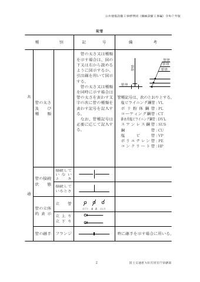

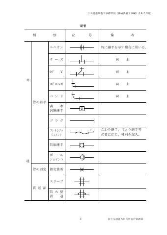

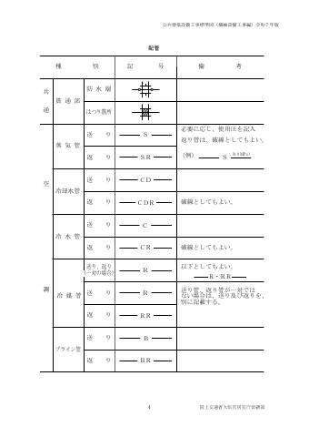


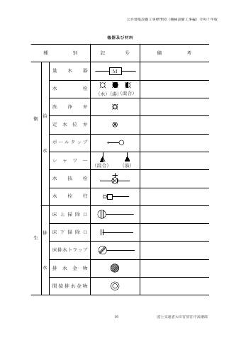

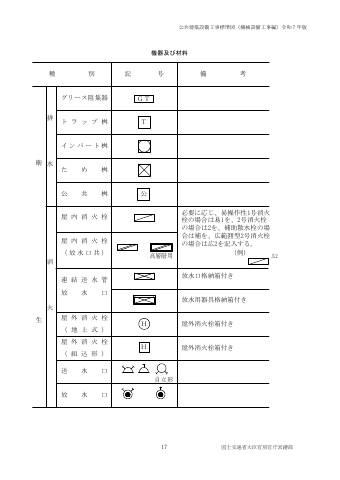

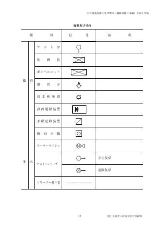

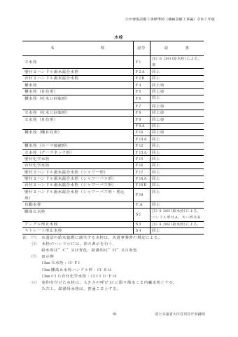

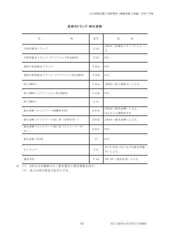

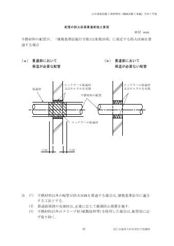

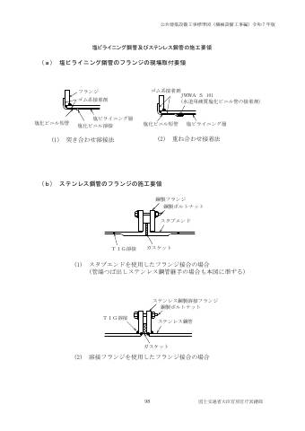

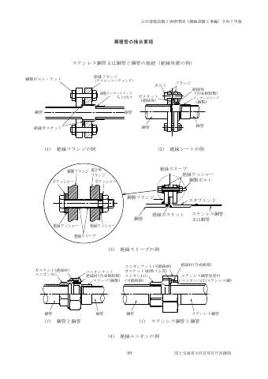

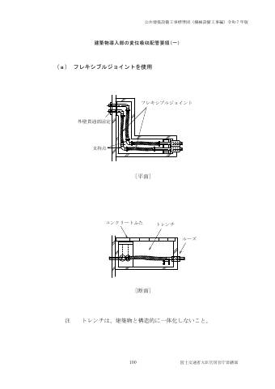

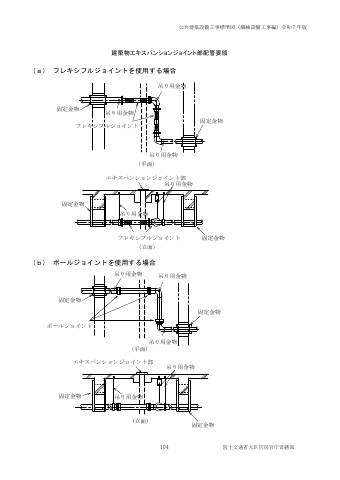

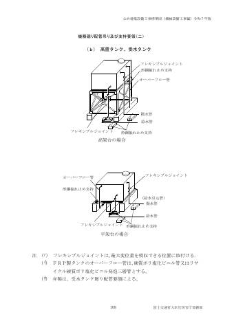


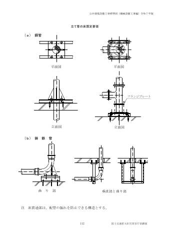

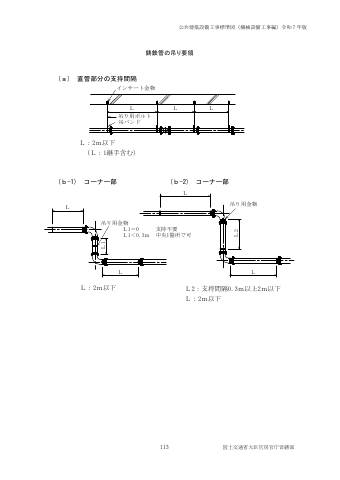

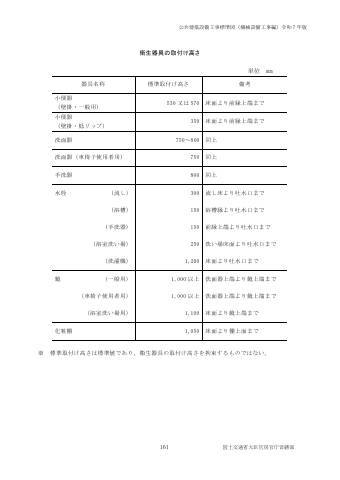

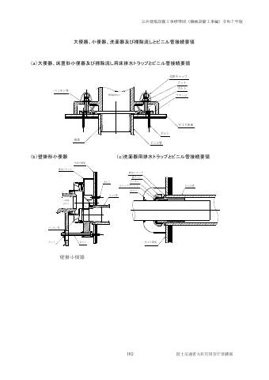


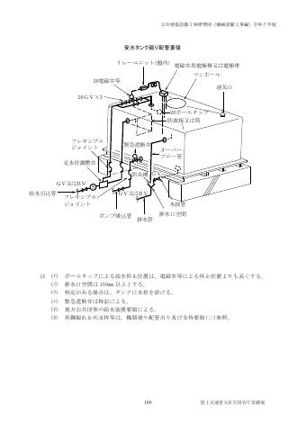

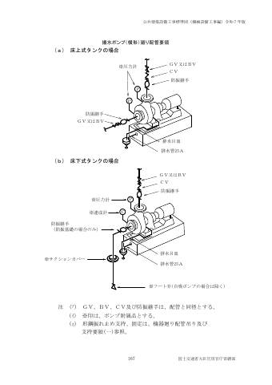

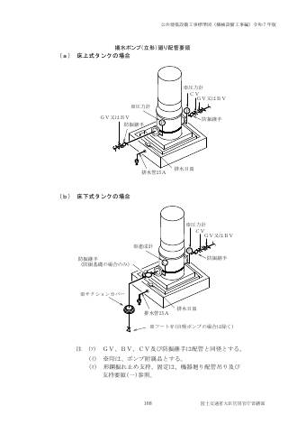

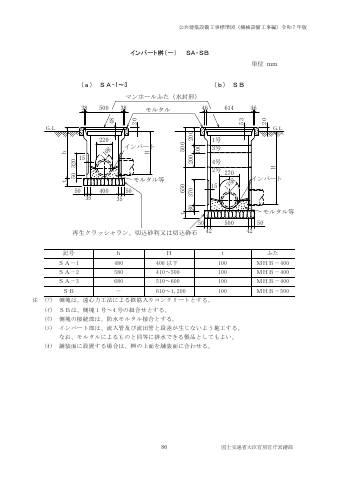

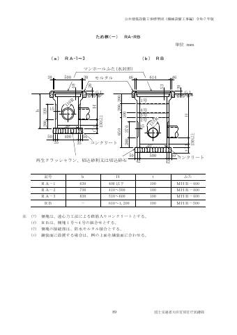